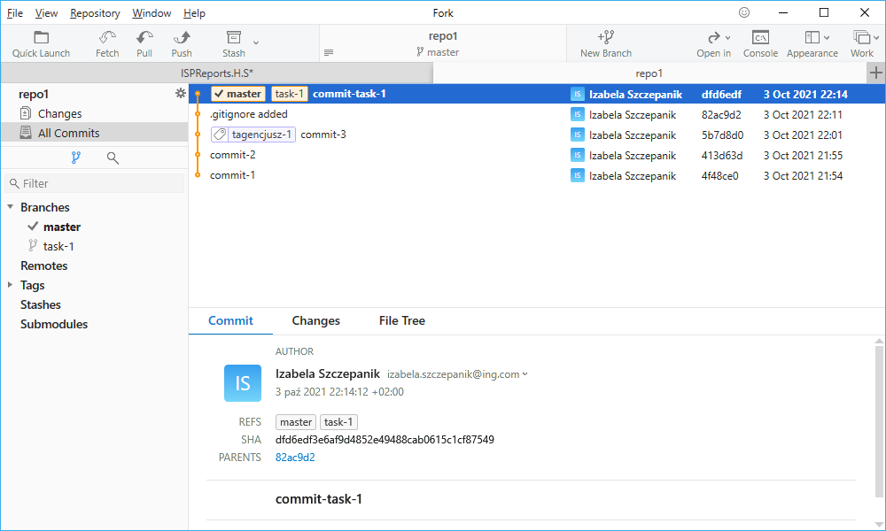

Rozpoczynasz pracę nad nową funkcjonalnością. Zgodnie ze sztuką robisz to na nowym branchu.
$ git branch task-1
Zacznij od utworzenia nowego brancha o nazwie task-1.
$ git branch
Sprawdź jakie masz teraz u siebie branche.
$ git checkout task-1
Przejdź na nowo utworzony branch i rozpocznij pracę nad ficzerem.
Zrób zmiany w istniejących już plikach, zacommituj wszystkie zmiany, nazwij je commit-task-1.
$ git checkout master
$ git merge task-1
$ git merge task-1
Wróć na branch master. Następnie zmerdżuj zmiany z brancha task-1.
$ git status
$ git log --graph --oneline
$ git log --graph --oneline
Sprawdź status i log. Podejrzyj jak to wygląda w GUI
